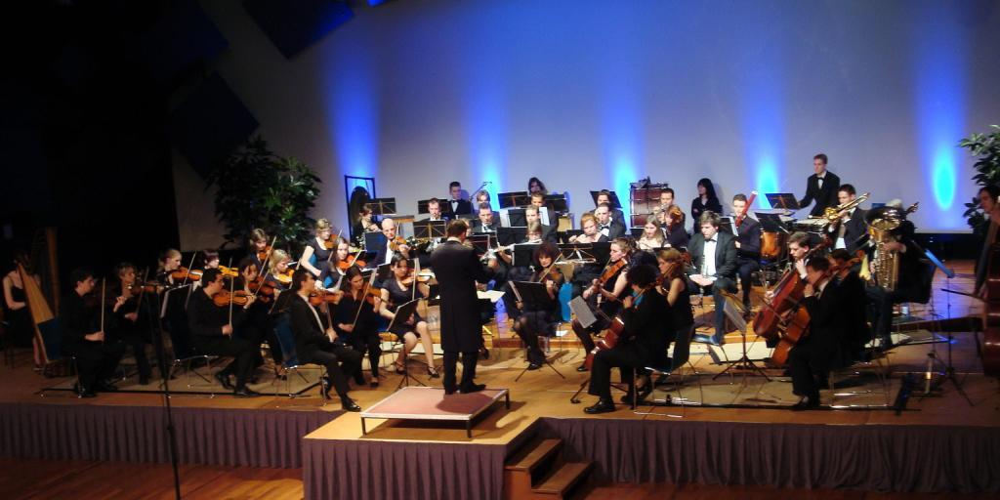

Kamerorkest Ensuite
Kamerorkest Ensuite is voortgekomen uit het strijkerensemble “Ma Non Troppo” en is in de zomer van 2002 opgericht als ondervereniging van ESMG Quadrivium. Momenteel telt Ensuite ongeveer 25 leden, maar het groeit elk jaar weer. Sinds december staat Ensuite onder leiding van Jos Schroevers.
Ensuite bestaat uit zowel strijkers, blazers als slagwerkers. De bezetting kan licht variëren, afhankelijk van het werk dat op het repertoire staat en zal zo nodig aangevuld worden met gastspelers. Ensuite speelt kamermuziekstukken en symfonische werken uit de verschillende stijlperiodes, maar maakt ook uitstapjes naar de wat minder traditionele muziek.

Dirigent: Jos Schroevers
Sinds december 2008 is Jos Schroevers dirigent bij Ensuite. Jos heeft slagwerk gestudeerd aan het Sweelinck conservatorium te Amsterdam. In het derde jaar van zijn conservatoriumopleiding kreeg hij een baan bij de Fanfarekorps Koninklijke Landmacht als paukenist en meldde hij zich aan voor de opleiding HaFa directie aan het Brabants conservatorium te Tilburg. Daar voltooide hij zowel zijn HaFa directie eerste fase als zijn opleiding slagwerk. Zijn studie tweede fase HaFa directie (master) bij Alex Schillings aan het Koninklijk Conservatorium te Den Haag maakte zijn opleiding compleet. Sinds september 2008 is hij de vaste dirigent van het harmonieorkest Auletes, ook onderdeel van ESMG Quadrivium.